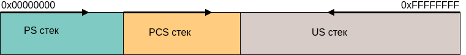
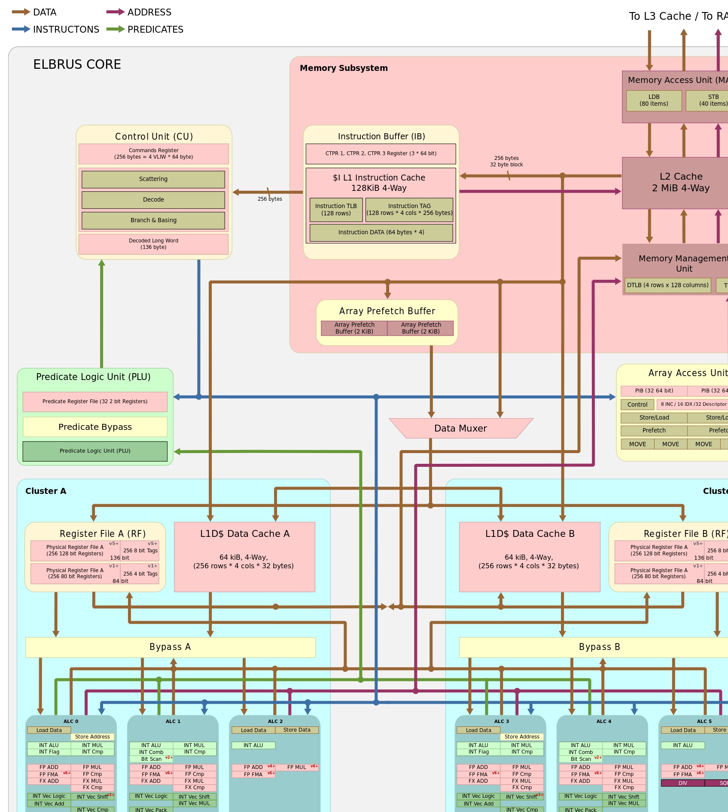

Главное преимущество оптимизации кода при помощи компилятора
LCC от МЦСТ в сравнении с оптимизацией исполняемого кода внутри
конвейера процессора – это то, что компилятор может видеть не маленький
участок программы, а большой, вплоть до всей программы (опция -fwhole), и
решение по оптимизации он принимает на основе анализа кода программы.
В Эльбрусе регистровый файл (используемые регистры) делится на 3 стека:
1. Стек процедур (Procedure Stack — PS).
2. Стек связующей информации (Procedure Chain Stack — PCS).
3. Стек пользователя (User Stack — US).

Три аппаратных стека по сравнению с одним в Intel.
Два из них защищены от модификации программистом. Один — chain-
стек — отвечает за хранение адресов для возвратов из функций, другой —
стек регистров — содержит параметры, через которые они передаются.
В
третьем — пользовательском стеке — хранятся переменные и данные
пользователя.
В процессорах Intel все хранится в одном стеке, что порождает
уязвимости, так как все адреса переходов, параметров находятся в одном
незащищенном от модификаций пользователем месте.
Все эти стеки аппаратно разграничены, программист и пользователь не
видят их все полностью.
Такая организация обеспечивает повышенную
защищённость при работе с данными.
